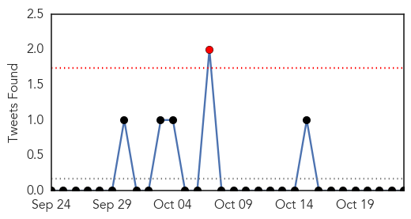

Influenza
30-Day Web Trend
0 alerts, 0 warnings

30-Day Twitter Trend
1 alerts, 0 warnings

Article Locations

Article Confidences

Top Articles:
- 0.997
- Health experts: Be smart, get flu shot
- 0.986
- Health Officials: First confirmed cases of flu in Oklahoma
- 0.979
- Oklahoma State Department of Health announces first confirmed cases of flu
- 0.974
- ASU Health Services offers flu shot clinics for students
- 0.914
- CVS Health and Direct Relief Partner to Donate $1 Million in Flu Shot Vouchers to Uninsured Patients of Community Health Clinics
- 0.910
- 80 people die in Britain every DAY from flu and pneumonia more than anywhere in Europe
- 0.890
- Scientists fight for superbug research as US pauses funding
- 0.889
- Scientists Fight For Superbug Research As U.S. Pauses Funding
- 0.887
- What kind of flu 'shot' is best for you?
- 0.882
- Scientists Fight For Superbug Research As U.S. Pauses Funding
- 0.858
- Scientists Fight For Superbug Research As U.S. Pauses Funding
- 0.785
- Crafty manipulator deceives cellular waste disposal system
- 0.747
- Flu viruses disguised as waste
- 0.633
- Hospital patients rarely wash their hands, may spread disease
- 0.559
- Viral-research moratorium called too broad : Nature News & Comment
Top Tweets:
-
No tweets found for Oct 23, 2014
Cholera
30-Day Web Trend
0 alerts, 0 warnings

30-Day Twitter Trend
0 alerts, 0 warnings

Article Locations

Article Confidences

Top Articles:
- 0.938
- Haiti Cholera Victims Seek Damages from UN in US Court
- 0.934
- 76 cholera cases recorded in Jomoro District
- 0.880
- Judge deliberates on whether UN can be sued by Haitian groups for cholera epidemic
- 0.860
- US court hears UN immunity arguments in Haiti suit
- 0.856
- UN votes to keep troops in Haiti as cholera case heads to court
- 0.829
- Courthouse News Service
- 0.764
- The angel of death
- 0.734
- The Solution To Our Economic Problems
- 0.716
- UN Claims Immunity From Haiti Post-Quake Cholera Lawsuit
- 0.692
- U.S. urges judge to dismiss cholera lawsuit against United Nations
- 0.639
- Mapostori erect blair toilet near borehole
- 0.572
- Haitians' lawyer asks NY judge to nix UN immunity
Top Tweets:
-
No tweets found for Oct 23, 2014